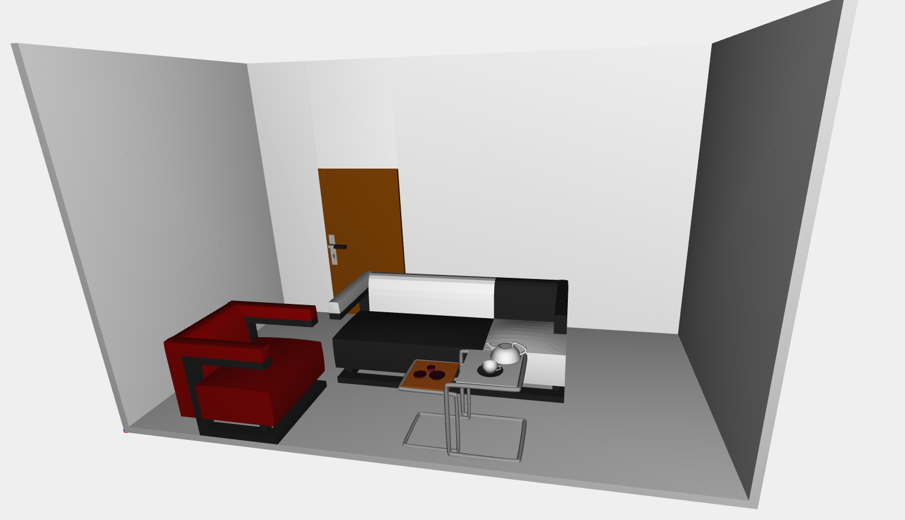

Foriture
Below are shown all the furniture made for the project. The resolution is very low, the resolution is very low, so as to allow a rapid visualizzation. Clicking on the button displays plasm. Can make some time
About the Artist

Walter Gropius studied architecture between 1903 and 1907 in Munich and Berlin. From 1908 to 1910 Walter Gropius worked for Peter Behrens, in whose practice the seminal AEG Tubine Hall of concrete, steel, and glass was planned and built. From 1910 Gropius had his own architecture practice in Berlin. In 1911 Gropius designed the Fagus Works in Alfeld. Walter Gropius was a member of the Deutscher Werkbund from 1910, where he joined Henry van de Velde in his initial efforts to counter standardization of design and promote individual creativity. In 1908 Walter Gropius was invited to head the school for the applied arts Henry van de Velde founded in Weimar. Although Gropius did not take up the appointment and the school closed in 1915, Walter Gropius kept in contact with Weimar. It was Walter Gropius who designed the concept for merging the "Kunstgewerbeschule" with the "Hochschule der Bildenden Künste" to found a teaching facility that would operate as a consultancy for industry, commerce and crafts. That laid the cornerstone for the "State Bauhaus", which was founded in Weimar in 1919, with the charismatic Gropius as its first director. The first three teachers Gropius hired for the "Bauhaus" were the artists Johannes Itten, Gerhard Marcks and Lyonel Feininger; they would be followed by Georg Muche, Paul Klee, Oskar Schlemmer, Wassily Kandinsky, Josef Albers, and László Moholy-Nagy. The "Bauhaus" curriculum consisted in preliminary courses and practical training in workshops. The workshops were to be laboratories for developing models "ripe for mass production, implements typical of the present day". When the "Bauhaus" in Weimar encountered political resistance from the authorities, Walter Gropius was forced to look for a new site. In 1925 the "Bauhaus" moved to Dessau into the new Bauhaus Building and Masters' Houses designed by Walter Gropius and built in 1925-26. Walter Gropius gave up his position as director in 1927 but the Bauhaus existed until 1933. In 1934 Walter Gropius went to England but in 1937 he was invited to teach at Harvard. In 1938 Walter Gropius brought Marcel Breuer to Harvard and founded a joint architecture practice with him. Gropius' own house built by the practice attracted numerous commissions for private houses. With Breuer Walter Gropius also built the Pennsylvania Pavilion for the 1939 New York World's Fair. In 1946 Walter Gropius founded "The Architects Collaborative" (TAC), with which he realized a great many projects.